How to use this lesson
§0 · From last time. Modules 1–10 build the agent. Module 11 justifies it to the people writing the cheque.
Business Scenario
Priya needs to present the Sherpa business case to HSBC's executive committee. They want a single number: NPV over 3 years, with sensitivity analysis.
Bridge to Topic
Agent ROI has four dimensions: cost displaced, cost added, quality delta, risk premium. Each gets a model. Combined → NPV.
Mind Map

Mermaid source
mindmap
root((ROI))
Cost Displaced
Labour saved
Throughput gained
Cost Added
LLM tokens
Infra
Eng time
Quality Delta
Error rate change
Customer satisfaction
Risk Premium
Regulatory
Operational
Reputational
Elaboration
4.1 Cost displaced
Hours of human time displaced × loaded cost per hour. Be honest: a 30% reduction is not 30% of headcount because of management overhead.
For Sherpa: 8 analysts × 6h/night × 365 × $80/hr = $1.4M/yr current. 30% displacement = $420K/yr.
4.2 Cost added
LLM + infra + ongoing eng:
- LLM cost: 1,400/night × 365 × $0.05 = $25,550/yr
- Infra (sandbox, retrieval, monitoring): ~$15K/yr
- Eng maintenance: 0.5 FTE × $200K = $100K/yr
- Total: ~$140K/yr
4.3 Quality delta
Sherpa is 87% accurate; humans are 95%. Net quality is worse unless paired with human review (which Sherpa is — it's a suggestion engine, not autonomous).
Quality dollar value: if Sherpa catches 30% more breaks per hour, downstream errors decrease. ~$50K/yr.
4.4 Risk premium
Probability × impact of outage, error, security breach. For regulated banking: 0.05 prob × $5M impact = $250K/yr risk premium added.
4.5 NPV
3-year NPV @ 8% discount:
- Year 1: −$140K + $420K + $50K − $250K = $80K
- Years 2-3: similar
- Total: ~$240K NPV
Positive. Sensitivity analysis: NPV stays positive if labour displacement > 18%. Below that, deal collapses.
Problem Statement
Build the ROI model for one of the three case-study orgs (or your own).
Solution Walkthrough
The template: roi-model.xlsx ships in module-11/. Fill in the dimensions; calculate NPV; run sensitivity.
Mathematical Foundation
7.1 NPV formula
$$ \text{NPV} = \sum_{t=1}^{T} \frac{C_t}{(1+r)^t} $$
where $C_t$ is net cash flow in year $t$ and $r$ is discount rate.
7.2 Sensitivity analysis
Vary each input ±20%. Identify the dimension where small changes flip the sign. That dimension is the "deal breaker."
Technical Deep-Dive
8.1 The "labour displacement is not headcount" rule
A 30% reduction in work doesn't translate to 30% fewer FTE. Often 0 FTE change initially (re-deployed to higher-value work). Build the model on hours, not headcount.
8.2 The "regulatory uplift" line
For regulated industries: agents often have a regulatory uplift cost (compliance reviews, audit prep, model risk validation). Add to "cost added."
8.3 The "second-order" benefits
Sherpa might enable Aisha to spend her time on the truly novel breaks (instead of repetitive ones). That quality uplift to her work is real but hard to quantify. Estimate; flag uncertainty.
8.4 The full Sherpa ROI worked example
Five-year NPV calculation:
ASSUMPTIONS:
- Current labour: 8 analysts × $80/hr loaded × 6h/night × 250 nights/yr
= $960K/yr (we'll round to $1.0M)
- Sherpa runs cover 70% of breaks at 30% of analyst time
→ Labour displacement: 30% × 70% = 21% of total labour
→ = $210K/yr
COSTS (Year 1):
Engineering (build): $400K (one engineer + DevOps for 4 months)
Engineering (maintain): $150K/yr (0.75 FTE)
Infrastructure: $25K/yr (LLM, Postgres, observability)
LLM tokens: 1,400 tasks/night × 250 nights × $0.05 = $17.5K/yr
Model risk validation: $50K/yr (annual external audit + internal review)
Year 1 total cost: $642.5K
Year 2+ total cost: $242.5K/yr (no build cost)
BENEFITS (annual):
Labour displacement: $210K
Error reduction (estimated): 30% fewer downstream rework = $80K
Quality uplift on novel breaks (Aisha effect): $50K [low confidence]
Total annual benefit: $340K [point estimate]
$290-$390K [80% confidence interval]
NPV CALCULATION (8% discount rate, 5 years):
Year 0: -$400K (build)
Year 1: +$340K - $242.5K = $97.5K (net)
Year 2: $97.5K / 1.08 = $90.3K
Year 3: $97.5K / 1.08² = $83.6K
Year 4: $97.5K / 1.08³ = $77.4K
Year 5: $97.5K / 1.08⁴ = $71.7K
5-year NPV = -$400K + 5 × ~$84K avg = $20.5K
IRR: ~10% (just above hurdle rate)
Verdict: borderline positive, sensitive to error-reduction assumption. Justifies the pilot; not a slam dunk.
Sensitivity analysis (varying key inputs ±20%):
| Variable | -20% | Base | +20% | Sign-change point |
|---|---|---|---|---|
| Labour displacement % | -$60K NPV | +$20.5K | +$110K | 17% displacement |
| Build cost | +$80K | +$20.5K | -$60K | $480K build |
| Maintenance cost | +$110K | +$20.5K | -$60K | $230K/yr maintenance |
| LLM cost | +$20K | +$20.5K | +$20K | (minor sensitivity) |
The labour displacement assumption is the deal-maker. If you can't credibly defend ≥17% displacement, don't build.
8.5 Common pitfalls in agent business cases
| Pitfall | What it looks like | Fix |
|---|---|---|
| Optimistic displacement | "We'll save 50% of headcount" | Build on hours, not headcount; show ramp-up curve |
| Hidden engineering cost | "Our team can build it in their spare time" | Allocate real FTE; track time honestly |
| Ignored ops cost | "It's just an API call" | Include observability, on-call, retraining cycles |
| Missing quality risk | "We'll reach human-level accuracy" | Model the cost of being below human-level + escalation |
| Single-vendor assumption | "Anthropic costs $X" | Model 50% price increase; if NPV flips, you have vendor risk |
| Ignored compliance work | "Same as our other ML" | Add SR 11-7 / EU AI Act uplift; ~10-20% of base cost in regulated industries |
8.6 The "show me the displacement" challenge
When labour displacement is the dominant benefit, leadership will ask: "Where is the displaced time actually going?"
Honest answers:
- Re-deployed to higher-value work (most common) — net headcount unchanged, productivity rises.
- Slower hiring — you would have hired 2 more analysts; now you don't need to.
- Genuine reduction — rare, ethically fraught, usually slower than projections.
Pre-write your answer. Without it, the business case dies in committee.
8.7 The "year zero" framing
For agents replacing repetitive work, often the right framing isn't NPV but:
"In year zero, our analysts spend X% of their time on tasks the agent can do better. After deployment, they spend that time on tasks no one's doing today — investigating systemic patterns, training junior staff, working with the model-risk team on new product launches."
This frames the agent as capacity expansion, not cost reduction. Often more palatable to stakeholders; often more honest about what actually happens.
8.8 Quarterly business-case refresh
ROI models go stale. Refresh quarterly:
- Update actual labour saved (vs projected)
- Update actual LLM costs (model prices change)
- Update accuracy metrics (regression eval results)
- Update displacement reality (where did the saved time go?)
After 1 year of Sherpa: actual NPV was $35K (slightly above projected $20K). Labour displacement came in at 23% (vs 21% modeled) because Aisha's team became more efficient at the residual work too.
What This Unlocks
- 11.2 covers build-vs-buy in light of the cost model.